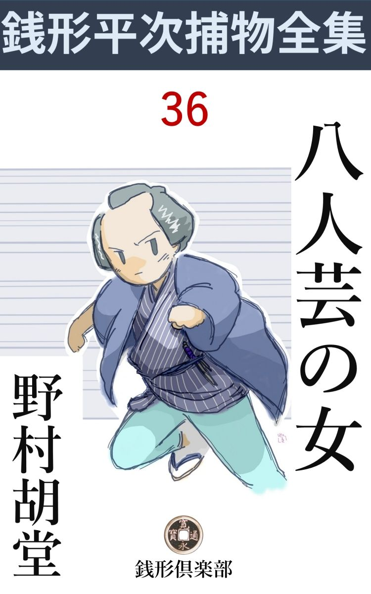
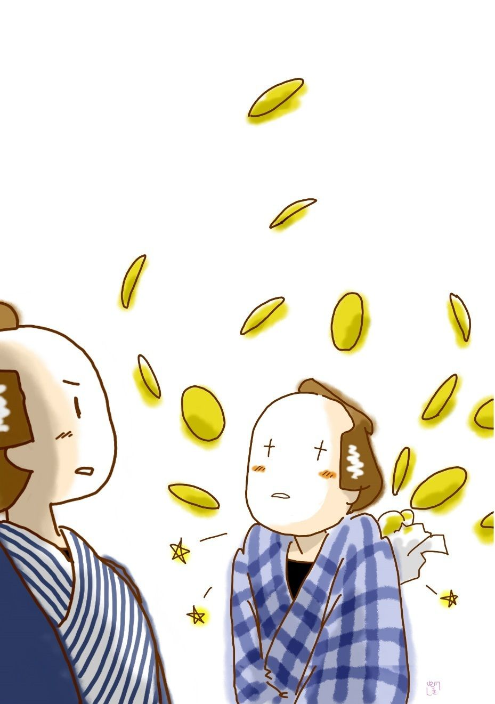

| 八人芸の女: 銭形平次捕物全集第36話 (銭形倶楽部) | |
| 野村胡堂 | |
| ZENIGATA CLUB (2018) | |

一
「親分、とうとう神田へ入って来ましたぜ」
「何が？ 風邪 の神かい」
その頃は江戸中に悪い風邪が流行 って、十二月頃から、夜分の人出がめっきり少なくなったと言われておりました。
「いえ、風は風だが、あの『疾風 』と言われている強 盗 で------」
「どこへ入ったんだ」
「神田も神田、新石町の大黒屋で」
「へエ、そいつは近過ぎて知らなかったよ。何日だい」
「昨夜------と言っても暁方だったそうで、盗られた金は三百両だが、後の祟 りが恐ろしいから、店の者一統に口留めして、おくびにも出さないことにしたんで」
「手前 はそのおくびをどこで聞いた」
「朝湯へ行くと、湯を貰いに来た大黒屋の下女が、これは極々の内証話だから、誰にも言わないように------って、ペラペラ喋 っていましたよ。口留めされると反ってウズウズして、言わずにおられないんだね、もっとも、泥棒の汚 した板敷や畳を掃除するのに、湯を沸す暇が無いという言い訳代りに、湯屋のお神さんを相手に、内証話を一席やった積りだろうが」
こんな事の聞込みにかけては、ガラッ八の八五郎、天才的な早耳でした。
「それは知らなかった、------外の事なら知らん顔もするが、『疾風』がこの辺へ入込むようじゃ放っちゃ置けねえ。行って見ようか」
「そう来るだろうと思って、まだ草履 も脱がずにいるんで」
二人は支度もそこそこ新石町へ飛んで行きました。
『疾風』というのは、その頃江戸中を顫え上がらせた兇賊で、人も害 めず、戸障子も破らない代り、巧みに人の虚 を衝いて、深夜の雨戸を開けさせて入り、抜刀で脅して有金を残らず渫 って行く手際は、巧妙と言おうか、悪辣と言おうか、実に人も無げなるやり口だったのです。
最初は本所から、浅草下谷を荒し、土地の御用聞をすっかり手 古 摺 らせておりましたが、警戒が厳重で手も足も出なくなると、今度は河岸を変えて平次の縄張なる神田へ黒い手を伸して来たのでした。
「番頭さん、昨夜はお客様だったってネ」
「あっ、親分さん、もう御聞きで------」
「そりゃア渡世だもの」
平次は気の置けない微笑を浮べて、店先に腰を下ろしました。
大黒屋という、小体 ながら表通りに店を張って、数代叩き上げた内福な呉服屋、番頭の佐吉は、内外一切の采 配 を揮っている、五十年配の白鼠だったのです。
「主人は生憎休んでおります。------なアにたいした事じゃ御座いませんが、平常 弱いところへ、昨夜はうんと脅かされましたんで、へエ」
「それは気の毒だ。なアに、主人に逢うほどの用事じゃアない。昨夜のことを、お前さんから詳しく話して貰えば、それで宜いわけだから」
「内証にして置こうと思ったのは、皆んな私の指金で、------素人の悲しさで御座います、こんなに早く御耳に入るとは夢にも思いません。私共にしますと、奪られた三百両より、後で仇 をされるのが怖かったんで御座います」
番頭の佐吉はクドクド言い訳をしながらも、平次を奥へ案内しなければなりませんでした。顔のよく売れた御用聞を、何時までも店 頭 に置くことは、商売のためにも決して結構なことではなかったのです。
日頃の平次は、こんな術 を用いるのは大嫌いでしたが、相手が頑固で策の施しようのない時は、出来るだけ神経を荒っ削りにして、こんな事もしなければならなかったのでした。
「昨日、日暮前の一番立て混んでいる時分に、若い御女中が一人、西陣の見事な帯を持っていらっしゃいまして、他 所 様から拝借した品だが、これと同じような帯が欲しいと仰しゃって、いろいろ御覧になった上、御気に召したのを一本御求め下さいました。丁度その時門付けか何か来て、店先が騒々しかったもので、ツイうっかりしておりましたところ、お帰りになった後で気が付くと、見本に御持ちなすった帯を忘れてお帰りになったので御座います」
「その忘れ物を、夜中に取りに来たんだろう」
「へエ------御察しの通りで」
佐吉は舌を捲きました。渡世や商売にしても、平次の気の廻るのに驚いたのです。
「よくある術 だ、------それから」
「かれこれ丑刻 半 、どうかしたら、寅刻 ------近かったかも判りません。表の戸をそっと叩く者があります。店に寝ていた小僧が起きて、臆病窓から覗くと、若い娘が月の光に照されて、濡れたような姿でションボリ立っていたんだそうで御座います。声を掛けると、夕方買物に来た時、他 所 から借りた見本の帯を忘れて行ったような気がする。お店にあれば宜いが、もし途中で落しでもしたのなら、親に叱られるばかりでなく、母親の形 見 だという大事の品を借出して、向うの方へも済まないから、生きて合せる顔はない------と言ったそうで」
「フーム、手が混んでいるな」
「あんまり気の毒なんで、手代を起して相談の上、表戸を開けて、忘れ物の帯を渡してやったんだそうで御座います」
「何だって臆病窓から渡さなかったんだ」
と平次。
「私もそれを申しました。すると、親分さんの前だが、若い者というものは、仕様のないもので------」
「番頭さんには若い時がなかったようだネ」
「へッ、御冗談で、------とにかく、相手は若くて滅 法 綺麗な娘が一人、こっちは若い男が二人ですから、臆病窓からなんか物を渡す気になれなかったことでしょう」
番頭は世にも苦々しい顔をしました。
「その娘の後ろから、覆面の浪人者が、抜刀 を持って飛込んだというのだろう」
「その通りで、親分さん」
「皆んな同じ手だ、------で、その男は物を言ったかえ」
「申しました。が、『金を出せ』------とたったこれだけで、帳場にあったのを掻 き集めてやると、黙って頭を振りました。通じない振りをして見ていると、『俺は物貰いじゃない、小判の外は金だと思わない事にしている』と言います。憎い野郎で------」
「それからどうした」
「何しろ抜刀 を持っているのと、何となく腕が出来そうで、不気味でなりません。仕方がありませんから、主人と相談の上、三百両出してやりました」
「一緒に来た娘は、その間どうしていた」
「それが一向判りません。店中の者が吃驚 している隙 に、外へ出てしまいましたようで」
これ以上の事は誰に訊いても解りません。買物に来た娘の年頃は十八九、かなり良い容貌 だったとは言いますが、夜来たのはその娘と同じ人間かどうか、それさえも判 然 しなかったのです。
強盗の装 や背の高さも区々 で、五尺五六寸と言う者もあり、精々五尺一二寸しかなかったと言う者もあり、覆面頭巾は一致しましたが、眼は大きいか小さいか、そんな事を注意した者もなく、ひどい事には、羽二重の小袖の紋さえも記憶している者がなかったのです。
「紋のない紋付というものはあるまい。羊 羹 色 でも羽二重なら、紋位はあった筈だ」
平次は突っ込んで訊きます。が、
「それが不思議で、どう思い出しても唯の石 持 で、紋の形を覚えている者は一人も御座いません」
これでは手のつけようがありません。
二
「親分、驚いたネ。------『疾風』ばかりは全く手のつけようがねえ」
大黒屋の近所を半日漁 って、ガラッ八はふらりと帰って来ました。
「娘の当りは？」
「そんな器用な娘があの界隈 にいそうもねえから不思議だ。------真夜中過ぎに、見附や自身番の目を免れて、遠方から通う道理はねえ------と親分は言いなさるが、あの居廻りには娘や妹持ちの浪人もいず、第一浅草や下谷から近頃引越して来た者もありませんぜ」
ガラッ八の八五郎は、半日の骨折りが無駄になって、少し機嫌が斜めです。
「フーム、容易な相手じゃねえ。それ位の細工はあるだろう」
「面白くねえ細工だ、泥棒らしくもねえ」
「怒るなよ八。ところで、近頃界隈へ越して来た人間は？」
「通新石町から筋違 見附、浅草御門、橋を越して外神田あたりまで、町役人を一々当って見たが、この一と月の間に越して来た者は二十二三軒はあります」
「その中で一番泥棒と縁の遠いのは？」
「驚いたね、怪しいのは調べ上げて来たが」
「あれだけ器用な泥棒が、手前 達が見て怪しいと思うような暮しをするものか。一番もっともらしい人間が一番臭いに決っているよ」
「正に一言もねえ。が、そんなのを知りたいと仰しゃるなら、親分、二人だけは確かにありますぜ」
「言って見な、誰と誰だ」
「松永町へ門跡 様 の裏から越して来た、中気病みの三次郎と、この町内の、しかも路地の外へ上州から出て来なすった、母 娘 者のお通さん」
「馬鹿野郎、俺は真面目に訊いているんだぜ」
「だから嫌さ。一番泥棒らしくねえのなら、誰が見たってこの二人だ」
「それじゃ泥棒らしいのは？」
「浪人者の森右門と、三次郎の娘で八人芸のお島」
「成る程」
「この二人が組めば天下の大乱も起せる」
「言う事が大きいね」
森右門は竪 大工町の裏店 住居で、家になんか滅多にいた事のない人間。お島は少し遠くて外神田の松永町に住んでおりますが、芸達者なことは江戸中の評判者で、門 付 こそしておりますが、知らぬ者のないほどの名物女だったのです。
その話の弾んでいる真っ最中でした。
「わッ、何てえことをしあがるんだ。人の家の中へ、いきなり物を投り込みやあがって」
不意に八五郎は飛上がりました。外から投り込んだ紙包が、障子を破ってしたたかにガラッ八の背中を喰らわせ、その辺一面に飛散ったのです。

「八、腹の立たねえものだ。見な」
「おや」
畳の上へ飛散ったのは、燦 たる山吹 色 。かき集めると、小判で丁度三十枚あるではありませんか。
「これはなんだい、一体」
平次も呆れました。長い間御上の御用は聞いておりますが、まだ金を投り込まれるような怨みを受けた覚えはなかったのです。
「さずかり物だぜ、親分。人間は平常 が大事だ」
「------」
「遠慮することはねえ、黙って取って置きなさるが宜い。せめてお静さんに新しい春着でも拵えてやってよ、親分もたまには暇をもらって湯治にでも行って------」
「馬鹿野郎」
「へエ」
「飛んでもねえ野郎だ。手前は人間が正直だけがせめても取柄だと思ったら、こんな素性の知れない金を、猫 婆 を極めさせようと言うのか」
「------」
「だがな、八」
「------」
ポンポン言う下から、平次は何やら考え直した様子でした。
「そう言うのは表向き、物事には何でも裏がある。女房の着物を拵えては、世間の目に立つが、干 割 れそうになっている腹の虫には、たまにお湿 りをくれねえと、どうも寿命の毒だ。一杯付き合わねえか、八」
「へエ------」
今度は八五郎の方が驚きました。何と言う訳のわからぬ平次でしょう。
三
『疾風 』はその間にも活撥に働いて、神田を中心に、下町一円を荒し廻りました。滅 多 に仕事をしない代り、よくよく狙い撃ちにやるものと見えて、一度襲撃すると、必ず三十、五十、どうかすると、百、二百と纏った金を手に入れずには措かないと言った、実に凄い手際だったのです。
係り同心からは、随分イヤな事も言われますが、平次はそれっきり活動を中止してしまって、身分不相応の遊びに耽 っております。
不思議なことに、『疾風』が仕事をした翌る晩、何かの形式で、必ず平次のところへ、盗んだ金の一割を届けて来るのでした。
「『疾風』は御用聞に金をバラ撒いているんだとよ、捕り っこはないわけさ」
世間でそんな事を言うのが、ガラッ八の耳へもボツボツ入って来る頃は、お静の眼にも余るほどの平次の脱線振りです。が、それも長いことではありませんでした。
「親分、『疾風 』が到頭殺しをやりましたぜ」
ある日の朝、早耳のガラッ八が飛込んで来るのを合図のように、平次の態度はまた元の緊張に返ったのです。
「どこだ、八」
「皆川町のたから屋で」
「質屋だネ」
「へエ、その質屋へ定石通り夕方八人芸のお島が来たんだそうですよ。あの家の総領で一と粒種の和太郎------五つになるのが、門付の八人芸の面白さに釣られてどこかへ行ってしまった------と気のついたのは夕飯の時で、それから騒ぎになったが、どこを探しても判りません」
「フーム」
八人芸というのは、後に紅 勘 踊 などに転化して、芝居の所 作 事 にまでされた街頭の名物で、頭巾を被り、くくり袴 を穿き、目かつらをつけ、三味線を弾き、胸と膝に括り付けた太鼓と鉦 を叩いて踊り歩いたものです。今日のチンドン屋を思い出しますが、紅勘と言われた後世の門付は、非常の名人で、十二文の銭を店頭へ置かなければ、振り向いても見ない程の見識があったそうです。
平次の時代の門付の八人芸はその原始的な形ですが、相当以上の芸達者があったもので、外神田に住んでいたというお島などは、若い娘の何に世をすね たか、美しくもあり、歌も音曲も踊りも達者ではあり、当時江戸中の人気をさらって行く程の評判者だったのです。
それはともかく、------
「たから屋の店中の者は言うまでもなく、町内からも加勢が出て、心当りへ人を飛ばし、主人夫婦と番頭と下女だけ留守をしていると、子刻 近くになってから、女の声で、------お宅の坊ちゃんを見つけて伴れて参りましたと言って来た者があります。大喜びで戸を開ける。これが『疾風』に早変りをした」
「子供は本当に帰ったのか」
「帰りました。近頃は物騒だから、女の声くらいじゃ、真夜中に戸を開ける商人はありません」
「殺しというのは？」
「百五十両の金を奪って、引揚げようという時、喜代松という手代が帰って来ました。これは気も腕っ節も強い男で、商売柄押借などは一手に引受けているそうですが、入口で出会頭、『疾風』と気がつくと、持っていた心張棒か何かで、この野郎と打ってかかった。が相手が強過ぎました。引っ外して置いて、よろめくところを、袈 裟 掛 に斬った、恐ろしい腕で」
話を半分聞いた時、平次は支度が出来て、自分の家を飛出しておりました。
あとは道々歩きながら聞いて、皆川町のたから屋へ着いた時は、まだ近所の人も詳しいことは知らない有様、どこで聴いて来るかわかりませんが、八五郎一流の早耳には、平次も舌を捲かずにはおられません。
筋は大体ガラッ八の話と変りありませんが、喜代松の死体を一と目見て、『疾風』の腕の冴えに、平次も度胆を抜かれました。出会頭の一と太刀で、人間は乳の下までは斬り下げられるものではありません。
「これは据物斬 の名人だ」
「へエ------、して見ると女じゃありませんね」
「女にも腕の出来るのはいないとは限るまいが、据物斬の名人なんて女は聞いた事もない」
「八人芸の名人とは異 いますか、親分」
「馬鹿、手前もそんな事を考えているのか」
平次は少し険 しい顔をガラッ八の方へ向けました。
「世間じゃそう言っていますぜ。不思議なことに『疾風』は、八人芸のお島に付き纏 っている」
「それは俺も聞いた。お島が浅草を流している頃は浅草を荒し、神田へ来ると、『疾風』も神田へ来る、------その上押 込 の入る日の二三日前に、キッとお島が門付に出ている」
「だから、世間じゃ言ってますよ。------江戸中の御用聞、別 ても捕物の名人と言われた平次親分が、お島に目をつけないのは可怪しい------って」
「目のつけようはねえ。お島の身許は手を変え品を変えて調べたが、芸人のくせに恐ろしく生真面目で一と晩も家を明けたことがねえ」
「へエ------」
「あれは名人と言うものだ。名人に悪党はない------と俺は決めている」
「そんなものですかね、親分」
「悪党になれるのは、生半可 な人間か、物事を器用にこなす奴だ、馬鹿と名人に悪人はないよ。------それに、もう一つ言って置くが、お島が『疾風』の手引だったところで、筋 違 見附か浅草御門の見附、橋々の番所の目をかすめて、どうして夜明け前に家へ帰れるんだ」
「成る程ね」
平次はガラッ八に説明しながらも、忙しく立ち働いて、店の内外、奉公人の顔触れ、喜代松の斬られた場所など、残る隈 なく捜し廻り、それから主人始め一同を、一人一人訊ねてみましたが、相変らず何の掴みどころもありません。『疾風』の丈は五尺五六寸の大男だったと言い、五尺そこそこの小男だったとも言い、羽織の紋は何の模様もない石 持 だったと言うだけの事です。
最後に誘拐 された伜の和太郎に当ってみました。五つと言っても、懐ろっ子で発育が遅いせいか、何を訊いても判然したことが判りません。
「女の人が伴れて行ったよ、------あっちの方だよ、------菓子を食べたり、遊んだり、面白かったよ、------うん、お家へ帰りたくなって泣いたら、ねんねしたよ、------目がさめたらお家だったよ」
こんな程度の話では、手掛りを手繰り出しようはありません。
四
平次はその足で神田松永町の裏長屋に住んでいる、八人芸のお島を訪ねてみました。
「あら、銭形の親分さん」
お島は平次の顔だけはよく知っておりました。これから商売に出かけるところでしょうが、目鬘 を付けて踊り歩くにしても、さすがに異 装 のまま自分の家から出かけるのが近所の人の手前極りの悪いものか、ここから平常 着 のままで出かけて、橋を渡って柳原の知合の家で、預けて置いた装束に着換えるのが、お島の習慣だったのです。
「出かけるところか。邪魔をしちゃ悪いな」
「飛んでもない、親分さん。まア一服なすって」
お島は家へ取って返して、平次とガラッ八のために、埋 火 を起して、お茶の用意をしました。
見かけは二十一二ですが、もう少し年を取っているかもわかりません。町の芸術家には全く惜しい容貌 で、第一その聰 明 らしさが、平次の同情をグングンと掴んで行きます。何を好んで八人芸などに身を落しているかわかりませんが、渋い茶をいれる手順なども、決してザラの娘ではなかったのです。
「此家 にたった一人住んでいるのかい、お島さん。その若さじゃ、世間様が淋しがらせちゃ置くまいが、少し物騒だね」
と平次、何もかも知っている癖にこんな事を言います。
「あら、そんなんじゃ御座いません。二階には父親がおります」
「そうかい、それは知らなかった。多分若い意気な父親だろう」
「飛んでもない、中気で寝たっきりですよ。親分さんが御出で下すっても、御挨拶も出来ません」
「それは気の毒だ、------いずれ後で逢って見舞いの一つも言わして貰おう、ところで」
平次は改まりました。
「------」
お島の顔が、サッと緊張したように思ったのは、ガラッ八の眼のせいばかりでもなかったようです。
「お前には気の毒だが、どうも世間の評判がよくねえ、------薄々知っているだろうが、あの『疾 風 』と言われた強 盗 が、お前が歩いた先々荒しているのはどういう因 縁 だろう。決してお前をどうしようと言うのではなく、今日は世間の噂をお前はどう考えているか、言い訳けがあるなら言い訳け、気がついた事があるなら、それでも宜い、とにかく、『疾風』と引っかかりがあるものかないものか、それを聴きに来たんだ」
平次の言葉は親切でしたが、退引 させぬ強いところがあります。
「有難う御座います、親分さん。その事については、私から親分さんに申上げて、智恵を拝借したい位で------」
「と言うと」
「私が深川で稼 いでいると、あの恐ろしい強盗 が深川を荒し廻り、浅草下谷へ来ると、やはりそこへ付き纏い、神田日本橋だけ流すと、神田日本橋へついて来ます。世間様の思惑より、これでは私が怖くてたまりません。それに近頃は、貰いも少なくなり、流して歩いても、皆んな変な眼で見るようで、病身の親を抱えて、これでは暮しになりません。いっそ上方へでも行こうかと思いますが、病人があっては、それも儘にならず、本当に困っております」
「フーム」
「親分さん、これは一体どうしたら宜いもので御座いましょう」
「------」
お島は思い入った様子でこんな事を言うのでした。
「それは気の毒だ------が、もう少し『疾風』のやり口が判っていないと、手のつけようがない」
「これなどは良い証拠じゃ御座いませんか」
お島はそう言いながら、後ろへ手を伸ばすと、針箱の中から贋 物ながら蜀 紅 の錦で作った、守り袋を取出して、平次の前へ押しやりました。
「おや、神田皆川町たから 屋太兵衛伜和太郎、甲 辰 歳 閏 五月生------」
守り袋の中の臍 の緒 書 を読んだ、平次の方が驚きました。
「そんな物が今朝家の中へ投げ込んでありました」
お島の顔には訳のわからぬ事件に対する不安の外に、何の蟠 まりもありません。
「これは大変なものだ。お島さん、この守袋の出よう一つで、お前さんはどんな事になるか解らなかった」
「まア」
「これは俺が借りて行く。宜いだろうな」
「え、どうぞ」
平次は不安と疑問を残したままで立ち上がりました。
「序 と言っちゃ悪いが、お前の父 さんを見舞って行こうか」
「取乱しておりますが」
気の進まないらしいお島に案内させて、平次は二階へ昇りました。
小綺麗と言っても、貧しそうな調度の中に、それでも温かそうに寝ているのは、お島の父の三次郎という六十近い男、若い時分は鳴らした武士だったと言いますが、今は見る影もなく萎 んで、口もろくにきけないような有様です。
「銭形の親分さんだそうで、飛んだ姿でお目にかかります」
起直ろうとするのを、平次はどんなに骨を折って止めたことでしょう。側にはそれでも畳んだまま、たしなみの紋付が一 襲 ね、蔦の紋のところに、白い糸のあるのは仕立直しの時着いたのでしょうか、平次はフトそんな事に気が付きました。
五
「親分、驚いちゃいけねえ」
「何だ、八」
「八人芸のお島が縛られた」
「えッ」
「三輪 の万七親分が乗出したんだ。自分の縄張内が散々『疾風』に荒される時は知らん顔をしていて、神田へ河岸を変えると、やって来てお島に縄を打つなんざ心得たもんで」
「つまらねえ事を言うな」
「へエ------」
「それより大事な仕事があるんだ、やって見るか」
「どんな事でもやっつけますぜ親分、三輪の親分の鼻を明かせることならなお有難えが」
「こうだ------」
平次は何やら囁いてガラッ八を寒い闇の中へ送り出しました。
それから一刻あまり。
「おや？」
平次が気がついて立上がった時は、縁側の手洗鉢の側へ、紙包みが一つ置いてありました。開いて見ると、小判で十五両、この間から始まった、『疾風』の冥加 金 でしょう。これが昨夜皆川町のたから屋で奪られた、百五十両の一割です。
「チェッ」
平次は思わず舌打をしました。これでお島が『疾風』の仲間だという疑いは晴れるわけですが、平次にしては、人まで殺して奪った金の裾分けを持って来たのが忌々しかったのでしょう。
平次はそのまま八丁堀へ飛込んで行きました。吟 味 与 力 で、南の利 け者、笹野新三郎の前へ出ると、例の十五両包を出して一 伍 一什 を報告したものです。
「平次、お前の潔白はよく判るが、一々夜中に持って来るまでもあるまい、明日にしたらどうだ」
この間から平次が持って来た金------『疾風』の仲間が投込んだ金が積り積って六十何両、泥棒の付け届けを、一刻も持っていられない平次の気象 もさることながら、笹野新三郎もこの根気には少し持て余し気味だったのです。
「御迷惑も存じておりますが、今晩参ったのは、少しわけが御座います」
「と言うと------」
「三輪の兄哥 がお島を縛ったそうですから、私のところへ金を投り込むのはお島じゃ御座いません。今晩十五両投り込んだのは、何よりの証拠で------」
「成程」
「後ろ姿は確かに見ましたが、女には相違御座いません。八の野郎が後を跟けておりますから、いずれどこの者か判りましょう」
「それじゃ、お島を帰せと言うのか」
「飛んでもない、お島はやはり留め置いて頂きたいんで。それも番所じゃいけません、御奉行所の仮 牢 でも、伝馬町でも」
「大層なことではないか」
「『疾風』は、なかなか喰える奴じゃ御座いません。裏の裏を掻く積りで行かないと、飛んだことになります」
「そうか」
笹野新三郎はそれっきり深くは問いませんでした。信頼しきっている平次の計画を邪魔したくはなかったのです。
そんな話をしているところへ、丁度打合せて置いたガラッ八もやって来ました。
「親分、判ったよ」
「旦那の前で、何て口のききようをするんだ」
「へエ、------今晩は」
ガラッ八は敷居 の外へペタリと坐りました。
「まア宜い、どうした八五郎」
「それが変で、路地を出ると暫らく思案をしていましたが、思い定めると、竪大工町へ」
「森右門という浪人者の家へ入ったろう」
と平次。
「よく御存じで」
「それからどうした」
「どうもしません。森右門の家へ入るのを見届けて、ここまで飛んで来たんで」
「馬鹿野郎、その先が知りたかったんだ」
「それなら初めからそうと」
「まア宜い。大方見当だけはついた。さア出かけよう」
平次がガラッ八を促 して、八丁堀を出たのはもう真夜中近く、それから真っ直ぐに竪大工町へ行って見ましたが、浪人森右門の家は、厳重に閉って留守。大急ぎで町役人を叩き起し、家主立会の上コジ開けて入ると、中は綺麗に空っぽで、ガラクタ道具が少々あるだけ、目ぼしい物はただの一品もありません。
「あッ、逃げられたッ」
ガラッ八が飛上がるのを抑えて、平次は思いの外冷静に囁きました。
「こう来なくちゃ嘘なんだ。驚くことはないよ、皆んな定石通り運んでいるのサ」
町役人家主に口留めして、二人が引揚げたのは丑 刻 過ぎです。
六
その晩、佐久間町の生薬屋 へ、『疾風 』が押し入りました。いつもの通り若い娘を手先に使って、『急病人があるから、気付け薬が欲しい』と言って戸を開けさせ、入れ替って覆面の男が、抜 刀 を突付けて脅かした上、何時もに似気なく、たった五両奪って逃出したのです。
それを聞くと、平次は雀 躍 りして喜びました。
「いよいよ『疾風』も罠 に陥ちたぜ」
「へエ------どんな罠で？」
「たった五両で逃出したのは、最初から目星もつけず、工夫もせずに入った証拠だ。まさか俺のところへ二分も持っちゃ来られまい」
が、しかし、こればかりは平次の見込み違いでした。夜になると、表の格子の間に半紙に包んだ小粒がちゃんと挾 んであったのです。
「畜生、ふざけた事をしあがる」
この時ばかりはさすがの平次も腹を立てました。
「親分、まさか八丁堀へ二分ばかりの金を持っちゃ行かないでしょうね」
「いや持って行く。二分でも三百でも、泥棒から金を貰っちゃ、十手捕縄の手前も済まない」
「驚いたな、どうも」
「ところで八、松永町の三次郎------、お島の親父は動けねえほどの病人だ。あの家へ来て、お島の代りに世話をしている前髪立ちの若い男を知っているだろうな」
「知ってますよ、------お島の義理の弟------母親が再縁した先の子だそうで、皆吉と言って、たしか十八とか言いましたが」
「それだけ知っていれば確かだ。明日一日その男を跟 けるんだ。目を放しちゃならねえよ。その代り日が暮れたら、どこに何をしていてもすぐ帰って来い」
「へエ------、お易い御用で、親分」
ガラッ八はそれっきり、翌る日の夕方まで帰って来ませんでした。頭の働きは少々位鈍 くとも、この忠実さが、平次にはたまらない結構な相棒だったのです。
「親分、驚いたの、驚かねえの」
薄暗くなってから帰って来たガラッ八は、相変らず頓狂な声を入口から張上げるのでした。
「お島が帰って行ったろう」
平次は驚く様子もありません。
「その通りで、どうしてそれを」
「今日丁度日の暮れる頃許して貰うように、笹野の旦那に頼んで置いたんだ。証拠もなし、口も開かず、家捜 しても、金は一文もなし、あの上留めて置く法はあるまい」
「成程ね、三輪の万七親分の顔が見てえ」
「余計な事を言わずに、それからどうした」
と平次。
「お島が来ると、あの皆吉とか言う弟が大急ぎで帰ってしまいましたよ」
「跟けたか」
「御念にゃ及ぶ------と来たね」
ガラッ八の鼻は蠢 めきます。
「いやな奴だな、------真っ直ぐにここへ来たろう。この路地の外の、上州から越して来た、お通の家へ入ったろう」
「あッ、それまで知っているんですかい」
「知らなくてどうするものか」
「驚いたなア、あれはお通の兄か何かですかい」
「お通だよ」
「えッ」
「あれがお通さ。------ガラッ八なんざ、小当りに当っても、口も利かないわけだ。あれはお前、皆吉って男なんだ」
「そいつは驚いた」
「それでなきゃア、テニヲハの合わない事ばかりさ。そこまでは大方察したが、その上の仕上げが出来ないんで骨を折ったんだ」
「へエ------あのお通が男とは、どうも」
八五郎余っ程口惜しかったと見えます。
七
「出かけようか、八」
「どこへ行くんで、親分」
「黙って来るが宜い」
二人は夕闇の中へ消えると、間もなくお通の家から、母親とお通------いやお通の本当の姿の皆吉が出て来ました。
「あれを跟 けるんでしょう」
「シッ」
二人はその後から巧みに跟ける。お通母子は、柳原を真っ直ぐに、薬 研 堀 へ出て、石垣の窪 みへ繋いだ不景気な釣舟へ下りて行くのです。
「皆吉か」
「父上」
侍言葉が先ず異様に響きます。
「母上は」
「お伴れ申しました」
「気をつけて舟へ乗るが宜い」
二人は船の中へ入ると、先からいる父親と何やらヒソヒソと話しております。
「姉上は」
と皆吉。
「後の始末をしておる。もう来る頃だ」
そのうちに火燧石 をきる鎌の音がして、硫黄 がプーンと匂うと、提灯に灯が入りました。
「------」
ガラッ八は危うく頓狂な声を張り上げるところでした。船の中にいるのは、紛れもなく浪人森右門の五十がらみの憎 体 な顔だったのです。
やがて両国河岸の方から急ぎ足の音がして、石垣にピタリと止ったものがあります。
「お島か」
「ハイ」
「大急ぎで乗れ。後を跟けられるような気がしてならぬ。幸い風も大したことはないようだ、夜のうちに羽田まで伸して、明日は精一杯駆けて程ケ谷泊りだ」
と森右門。
「父上様------、母上様も御聴き下さいまし。私はこれにてお暇を頂きます」
「何、何を言う、お島」
「親子と申しても、私は御縁が薄く、父上様御慈愛の下に物心もつかぬ頃育ったとは承りましたが、元々伯 父 姪 の間、母上様、皆吉などともその通り」
「今更何を言うのだ、お島」
お島の悲壮な声を、森右門は叩き消すように叱りつけました。低いながら、威脅 の語勢は充分で、容易に言葉を返させない自信が充ちております。
「いえ、もう怖くは御座いません。------どうぞ、一代に一度、私の申すことをお聴き下さいまし。父上様------いえ伯父上様、御思召に引摺られて、一年越し本意ない夜 盗 押 込 の手引きをいたしました。------私は何も致したわけでは御座いません。私が歌ったり踊ったりしている間に、女に化けた弟の皆吉が、いろいろの事をしただけで御座いますが」
「黙らぬか、お島」
「でも、時々私が入れ変って、近所の衆や、橋番所の眼を誤 魔 化 したり、弟が八人芸の装束 をつけて、街をスーッと帰ったりしました。私も係り合いがないとは申されません。縛られても、殺されても、怨みに思う筋は御座いません」
「------」
「でも、御先祖様の祀 を絶つわけには行かぬ、木村家を立てて行くには、どうしても三千両の金が要る。三千両持って帰って、先代様が過って焼いた、主君の菩 提 所 を再建すれば帰参も叶い、一族一藩への面目が立つと仰しゃって、嫌がる私や皆吉を、無理に仲間に入れ、あんな恐ろしい事を遊ばしました」
「------」
森右門と名乗った木村六弥も、その妻も、------何にも言いませんでした。川面を吹き渡る冷たい風が、お島の身体も声も顫わせて、何とも言えぬ陰惨の気が四方をこめます。
「三千両は首尾よく集まりましたが、私はもう、つくづく武家の暮しが厭になりました。町で育って幸い身に着いた遊芸、これで何時までやって行けるかわかりませんが、皆様とお別れ申上げて、気楽に世渡りがいたしとう御座います」
「馬鹿なッ」
木村六弥の怒りの声が、吹き募って来た夜風に吹き千切られます。
「たから屋の手代が斬られた時から、私は覚悟を決めました。貧乏人いじめはしないまでも、何百人と困らせ苦しめた金、人間一人の血を流した金で、菩提所を建立 したところで、先祖様を祀ったところで、何の供 養 にも功 徳 にもなりません。私は、私は------」
お島は顔を反 けて泣いている様子でした。さすがに断ち難い恩愛に、後ろ髪を引かるる想いなのでしょう。
「お島ッ、何と言う雑言だッ。子が親に意見めかしい事を言うさえあるに」
木村六弥はいよいよ怒りのために口がきけない様子です。
「私は父上様から骨折賃に頂いたお金、盗んだ額 の十の一つは------皆んな御用聞の家へ投り込みました。父上の罪、私共の罪を、少しでも軽くしたかったのと、盗んだお金を身につけるのがイヤだったからで御座います。御用聞の中には、それを黙って受取ったのもあるでしょうが、銭形の平次親分などは一文も身につけずに、八丁堀の役宅へ持って行って積んであると聞きました。御用聞、手先の中にも、そんな立派な男もあります」
「------」
「私は武家に還 るのが厭で御座います。さらばで御座います」
「待て待て、お島」
「------」
木村六弥は呼び止めましたが、お島は何やら不安を感ずるらしく、それを耳にもかけず、さっと踵 を返して、夜の鳥のように、闇の中に消えてしまいました。
「お島、たった、一言、聞かしてあげよう。お前は、お前は------」
闇を追いすがるのは母の声です。
「黙れッ、余計な事を言ってはならぬ」
と木村六弥はその口を塞 ぎました。
その隙にお島は、名人らしい軽捷 さで、両国の方へ飛んで行ってしまった様子です。
八
「八、聞いたか」
「驚いたネ、親分」
「『疾風 』はお島の父親だと気がついていたが、あんな経 緯 とは知らなかった。が、罪は罪だ。お島が見捨てたほどの人間だもの、遠慮はあるまい。盗んだ三千両の隠し場所が判らないばかりに今まで許して置いたが、あの船の中にあるに違いない。飛込んで行くか」
「心得た」
「相手は凄い腕だぞ」
「何の」
平次が側にいさえすれば、ガラッ八はこの上もなく豪傑になります。
「御用ッ」
「神妙にせいッ」
飛込んだのがたった二人と見ると、木村六弥はせせら笑って迎えました。
「手が廻ったか。皆吉、見物せい」
岸へ飛上った木村六弥、真っ向から二人を呑んでかかりましたが、ガラッ八の腕力と、平次の投げ銭は、巧みに六弥の鋭鋒を挫 いて、次第次第に追い込みました。
「父上、御助勢申す」
岸の上へ躍り上がろうとする皆吉の上へ押しかぶさるように、六弥は元の船へ飛移りました。
「あの銭がうるさい。逃げるが勝ちだ、大事の前の小事に構ってはならぬ。お前は漕げ」
「ハッ」
皆吉に漕がせて、船は次第に岸を遠退きます。こうなっては、平次の投銭もそれを停めようはありません。
× ×
その晩のうちに、一切の事件は解決されてしまいました。木村六弥夫婦親子三人を載せた小舟は、折から立って来た朔 風 に吹き捲くられて、海上遥かに流され、場所も判らずに沈んでしまい、泳ぎも何にも知らない母親だけがたった一人、漁船に救い上げられて不思議の命を助かったのです。
銭形の平次は、間もなく半死半生の母親を見付け、お島に引渡したことは言うまでもありません。
お島は平次の庇護 に、すっかり過去の暗い影を洗い落して、義理の母親を養いながら、相変らず、江戸中の人気をさらって行きました。
「お島の父親だと言った、中気の三次郎はどうしたんだろう。森右門に殺されたのかな」
程経てガラッ八がそんな事を言うのを、平次はどんなに面白がったことでしょう。
「あれは森右門の二た役さ。本名は木村六弥だ、------中気病は誰にでも真似が出来るし、外へ出なくとも、医者が来なくとも、誰も不思議に思わないから調法な偽 患 いだよ」
「あ、成------る」
ガラッ八も少しどうかしております。
「相変らず気楽だぜ、八」
「まだ腑に落ちない事があるんだが------お島が隠して置けば宜いのを、わざわざ針箱の中から和太郎の守袋を出して見せたのは、どうしたわけでしょう、親分」
「そこがお島の賢 いところさ。どうせ家捜しくらいされるだろうし、岡っ引にあれを見付けられちゃ動きが取れないから、自分の方から出して見せたんだ、------もっともその前に俺は、お島の父親が『疾風』と解ったよ」
「へエ、------どんな事で」
「入口に真新しい雪駄があったが、裏金を剥して、表には泥足の跡が付いていた。足 袋 跣足 になって履いた証拠だ、女や中気病 の仕業じゃねえ。それから、二階に羊羹色羽二重の紋付が畳んだままあったが、蔦の紋の上に白い糸屑が付いていたろう」
「------」
ガラッ八にはそんな事は解りません。
「強盗に早変りの時、紋の上へ白い布 を縫い付けて石持に見せたんだ」
「『疾風』が、大きく見えたり、小さく見えたりしたのは？」
「あの木村六弥というのは大変な男だ。据物斬 は名人だし、その上体術は非凡だ。背を盗むことや、中腰で歩くことは何でもない」
「へエ------」
「だが、お島には一目も二目も置いていたよ。あれはえらい女だ。八人芸に身を落しているくせに、どこかピカピカするよ。もっとも本当は木村六弥は伯父でも何でもなく、六弥の弟が育てた身分ある者の娘だって話だ。母親が船の中で言おうとしたのは、その事だったんだ」
「成------る」
ガラッ八はすっかり感に堪えました。
断るまでもなく、三千両は平次の心覚えを辿 って、南の奉行で引揚げ、盗られた筋にそれぞれ返してやりました。今頃品川の海なんかにはありません。
（編注）
作品中には、身体の障害や人権にかかわる、差別的な語句や表現が見られますが、本書が成立した当時の時代背景等が現代とは異なる古典的な文学作品でもあり、著者が故人でもありますので、底本のままとしました。ご理解、ご諒承のほどをお願い申し上げます。
著者---野村胡堂
挿絵---萩 柚月 © 2017
初出---「オール讀物」昭和十年一月号 文藝春秋社
底本---「錢形平次捕物全集」第二巻 河出書房 昭和三十一年五月三十一日初版
編集・発行 銭形倶楽部